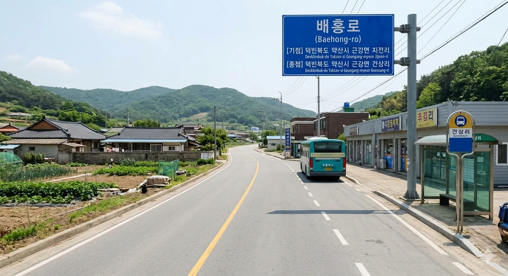
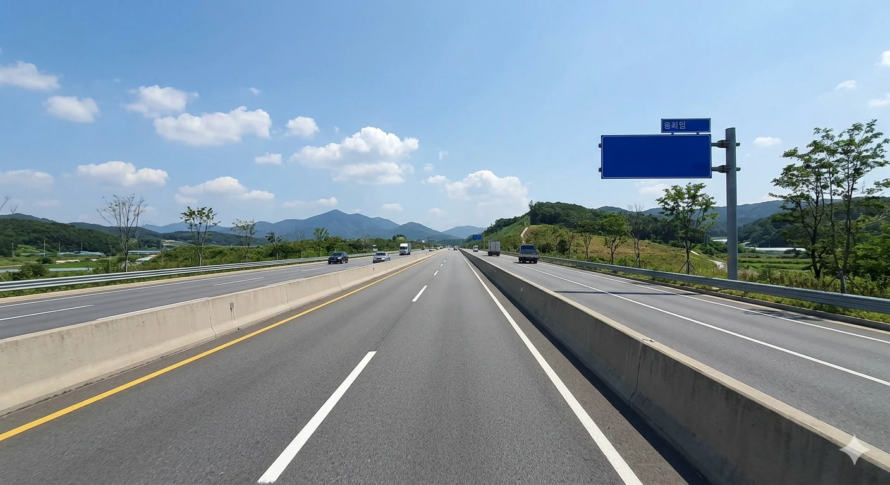
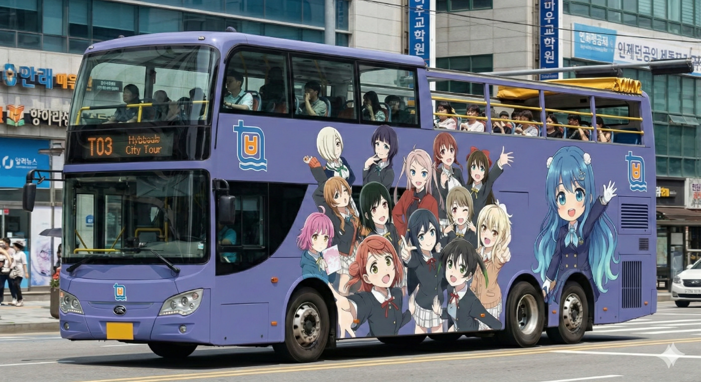
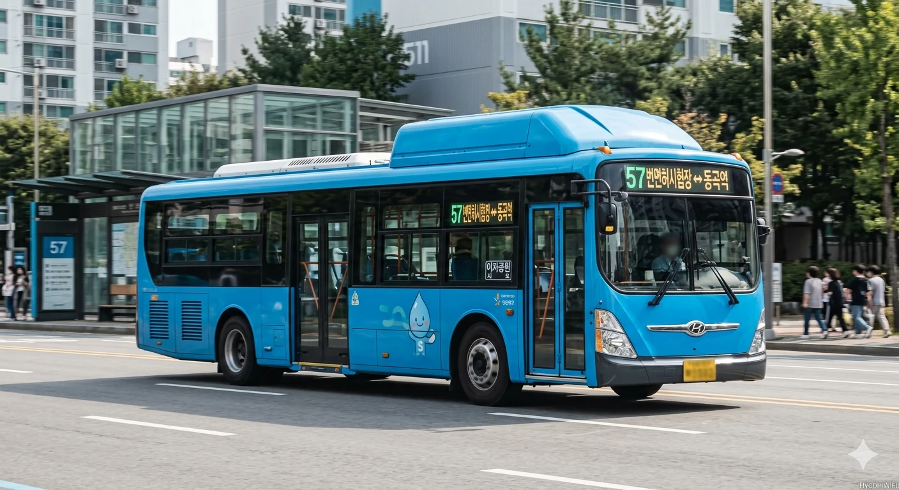
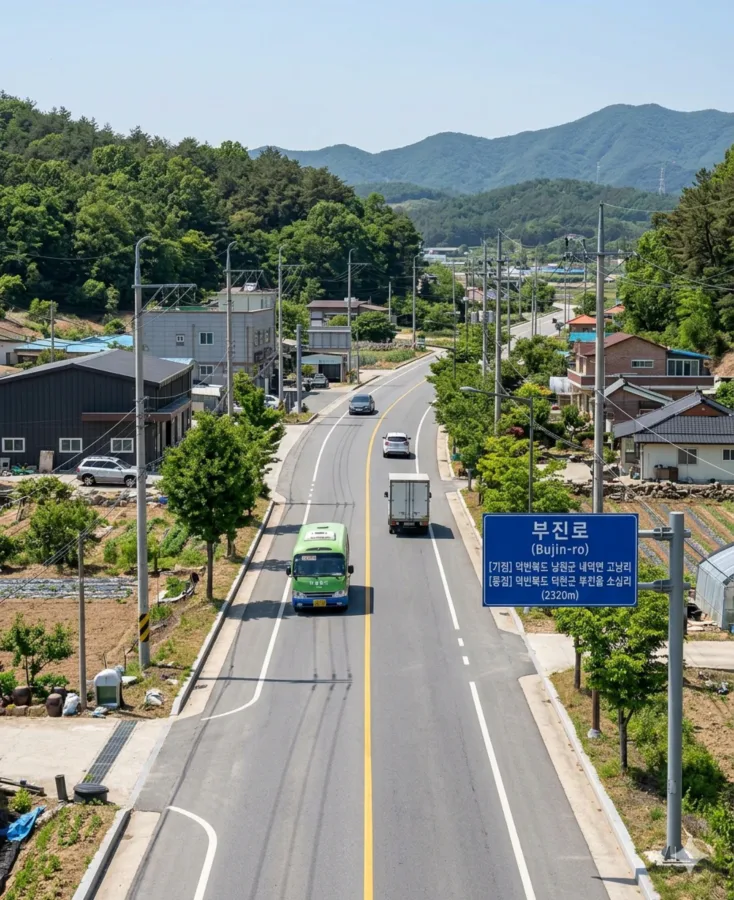
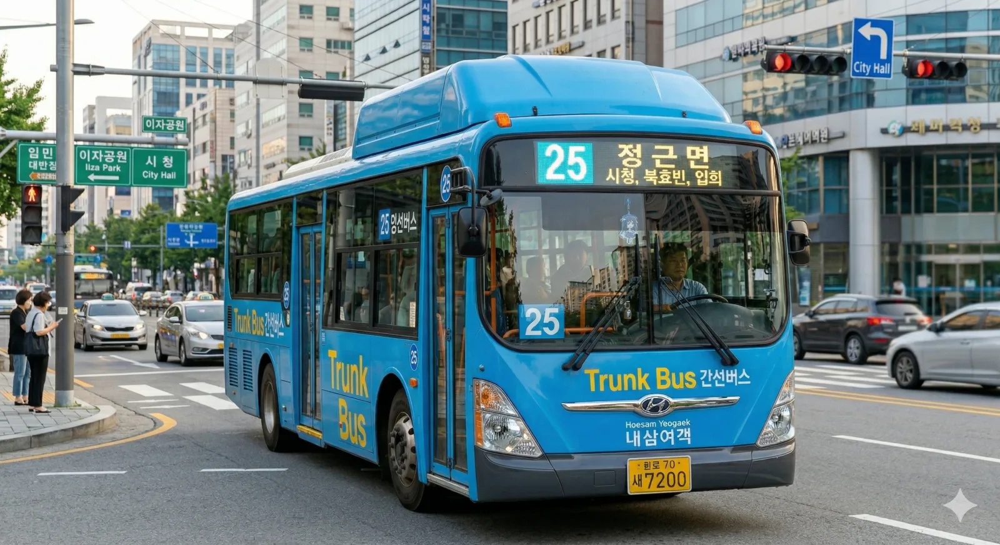
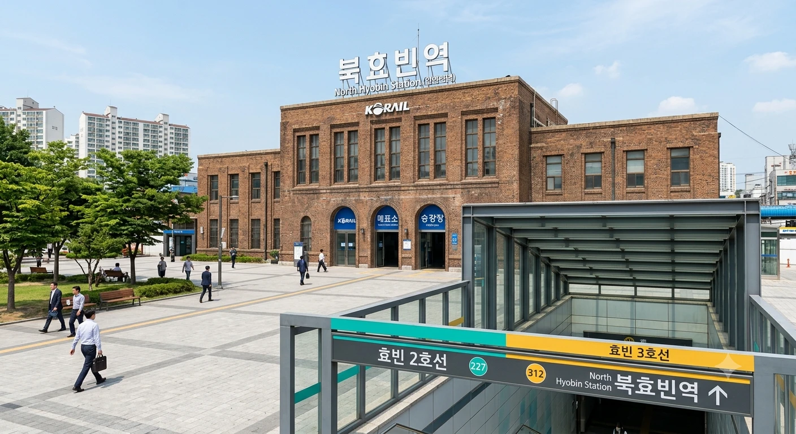

효빈광역시 관내 도로 목록 (ㅂ)
문서
토론
편집
역사
분류:
효빈광역시 | 도로 | 교통 | ㅂ목록
초성 이동:
ㄱ (50)
ㄴ (17)
ㄷ (19)
ㄹ (2)
ㅁ (12)
ㅂ (14)
ㅅ (34)
ㅇ (77)
ㅈ (28)
ㅊ (29)
ㅋ (2)
ㅌ (5)
ㅍ (19)
ㅎ (35)
기타 (5)
| 사진 | 도로명 | 노선 색상 | 총 연장 | 기점 | 종점 | 경유 행정구역 | 경유 버스 | 주요 시설물 |
|---|---|---|---|---|---|---|---|---|

|
바명로 |
#7777AA |
4018m | 덕빈북도 약산시 산형동 | 덕빈북도 약산시 약산2동(고곡동) | 덕빈북도 약산시 산형동 | 덕빈북도 약산시 약산2동(고곡동) | 덕빈북도 약산시(고곡동) | 덕빈북도 약산시 산형동(대염동) | 광역버스 4000, 광역버스 9000, 좌석버스4004, 좌석버스5555 | |
|
 |
배홍로 |
#7777AA |
3473m | 덕빈북도 약산시 근강면 지전리 | 덕빈북도 약산시 근강면 지전리 | 덕빈북도 약산시 근강면 지전리 | 덕빈북도 약산시 근강면 건상리 | 경유 버스 없음 | |
|
 |
번영로 |
#7777AA |
7057m | 덕빈북도 낭원군 내덕면 중야리 | 덕빈북도 천주시 천성구 천성동 | 덕빈북도 낭원군 내덕면 중야리 | 덕빈북도 낭원군 내덕면 내덕리 | 덕빈북도 천주시 천성구 천성동(상좌동) | 덕빈북도 천주시 천성구 천성동 | 덕빈북도 천주시 천성구 천성동(평온동) | 덕빈북도 낭원군 내덕면 시발리 | 덕빈북도 천주시 천성구 천성동(관일동) | 경유 버스 없음 | |

|
법원로 |
#7777AA |
4340m | 효빈광역시 북구 중수4동(중수동) | 효빈광역시 북구 채산동(수포동) | 효빈광역시 북구 중수4동(중수동) | 효빈광역시 북구 중수3동(중수동) | 효빈광역시 북구 채산동(실본동) | 효빈광역시 북구 채산동(신영동) | 효빈광역시 북구 채산동(수포동) | 효빈광역시 북구 남전동 | 급행버스02번, 급행버스03번, 급행버스05, 순환버스30, 광역버스2000, 좌석버스3333, 공항버스 A01, 간선버스13, 간선버스24, 간선버스25, 간선버스33, 간선버스34, 간선버스35, 간선버스38, 지선버스131, 지선버스132, 지선버스232, 지선버스241, 지선버스251, 지선버스331, 지선버스334, 지선버스341, 지선버스351, 지선버스391, 지선버스492, 지선버스522, 지선버스362, 마을버스 채산01 | 중수역, 효빈고등검찰청(중수청,공소청으로 변경예정), 남전중, 남전역, 토모초, 북효빈우체국, 신영중, 남전아파트, 국가기록원 효빈기록정보센터, 국가기록원 효빈센터, 채산역, 한국수자원공사 효빈본부, 텔레칩스 효빈오토모티브, 현대오토에버 효빈SW센터, 신영모빌리티데이터센, 오픈엣지테크놀로지 효빈센터, 신영역, 칩스앤미디어 효빈비디오, 두산로보틱스 효빈솔루션, 사피온(SAPEON) 코리아 효빈지사, 에스피지(SPG) 효빈정밀, 신영신산업중심단지, 램리서치 효빈테크놀로지센터, 제주반도체 효빈IoT센터, 만도모빌리티솔루션즈(MMS) 효빈, 한국로봇융합연구원(KIRO) 효빈분원, 파두(FADU) 효빈데이터랩, 리벨리온(Rebellions) 효빈캠퍼스, 효빈반도체융합기술원, 가온칩스 효빈디자인하우스, 어보브반도체 효빈MCU, 스트라드비젼 효빈AI랩, 뉴로메카 효빈자동화랩, 오토노머스에이투지 효빈지사, 로보티즈 효빈액추에이터, ASML 코리아 효빈트레이닝센터, 넥스트칩 효빈ADAS, 에이디테크놀로지 효빈지점, 2호선 신영차량기지(예정), 세미파이브 효빈오피스, LX세미콘 효빈R&D센터, 레인보우로보틱스 효빈협동로봇, LIG넥스원 효빈해양드론센터, 한화시스템 효빈ICT연구소, 효빈드론관제센터, 티로보틱스 효빈물류, 딥엑스(DeepX) 효빈연구소 |

|
보녕로 |
#7777AA |
5337m | 덕빈북도 약산시 역성동(석동동) | 덕빈북도 약산시 우부동 | 덕빈북도 약산시 역성동(석동동) | 덕빈북도 약산시 약산1동(보녕동) | 덕빈북도 약산시 우부동 | 덕빈북도 약산시 역성동(역석동) | 광역버스 5000, 광역버스7000, 광역버스 9000 | |

|
보몽로 |
#7777AA |
3638m | 효빈광역시 북구 천왕사동 | 효빈광역시 동구 덕현2동(덕현동) | 효빈광역시 북구 천왕사동 | 효빈광역시 북구 천왕사동(해서동) | 효빈광역시 동구 전천동 | 효빈광역시 동구 덕현1동(덕현동) | 효빈광역시 동구 덕현2동(덕현동) | 급행버스01, 급행버스02번, 급행버스05, 순환버스10, 순환버스20, 광역버스3000, 광역버스6000, 좌석버스6666, 공항버스A03, 간선버스13, 간선버스15, 간선버스18, 간선버스24, 간선버스25, 지선버스131, 지선버스132, 지선버스172, 지선버스193, 지선버스261, 지선버스271, 지선버스334, 지선버스341, 지선버스 361, 지선버스371 | 이마트 효빈터미널점, 해서초, 보몽역, 덕현아파트 1단지, 덕현1동행정복지센터, 덕현아파트 2단지, 덕현 이편한세상 아파트 |
|
 |
복지대학로 |
#7777AA |
2069m | 효빈광역시 북구 고송8동(고송동) | 효빈광역시 서구 과진2동(과진동) | 효빈광역시 북구 고송8동(고송동) | 효빈광역시 서구 과진2동(과진동) | 효빈광역시 서구 사복1동(사복동) | 급행버스02번, 급행버스06, 급행버스09, 광역버스3000, 광역버스6000, 좌석버스3333, 공항버스 A01, 공항버스A02, 공항버스A03, 간선버스22, 간선버스23, 간선버스25, 간선버스26, 간선버스33, 지선버스123, 지선버스129, 지선버스221, 지선버스232, 지선버스252, 지선버스271, 지선버스291, 지선버스522 | 과진 이아르, 사복휴먼시아 2단지, 효빈복지대역, 효빈복지대학교 |

|
봉선로 |
#7777AA |
1193m | 효빈광역시 탄성군 소원면 윤부리 | 효빈광역시 안천구 이자2동(이자동) | 효빈광역시 탄성군 소원면 윤부리 | 효빈광역시 안천구 이자2동(이자동) | 급행버스02번, 간선버스58, 지선버스154, 지선버스592, 지선버스572 | 이자휴먼시아아파트 |
|
 |
부우로 |
#7777AA |
6602m | 효빈광역시 탄성군 소원면 소원리 | 효빈광역시 안천구 칠채동(서수동) | 효빈광역시 탄성군 소원면 소원리 | 효빈광역시 탄성군 소원면 라면리 | 효빈광역시 탄성군 정명리 | 효빈광역시 안천구 칠채동 | 효빈광역시 안천구 칠채동(서수동) | 효빈광역시 탄성군 소원면 부우리 | 간선버스35, 간선버스57, 간선버스58, 간선버스59, 지선버스252, 지선버스 552, 마을버스 소원01, 마을버스 소원02 | |
|
 |
부진순환로 |
#7777AA |
2320m | 덕빈북도 낭원군 내덕면 고남리 | 덕빈북도 덕현군 부진읍 소심리 | 덕빈북도 낭원군 내덕면 고남리 | 덕빈북도 덕현군 부진읍 고선리 | 덕빈북도 덕현군 부진읍 소심리 | 경유 버스 없음 | |

|
뿌리빛로 |
#7777AA |
8154m | 효빈광역시 북구 사능1동(치남동) | 효빈광역시 안천구 뇌전동 | 효빈광역시 북구 사능1동(치남동) | 효빈광역시 북구 사능1동(생곡동) | 효빈광역시 동구 전천동 | 효빈광역시 동구 덕현7동(덕현동) | 효빈광역시 북구 채산동(수포동) | 효빈광역시 안천구 뇌전동 | 효빈광역시 북구 사능1동(사능동3가) | 효빈광역시 동구 덕현9동(덕현동) | 효빈광역시 안천구 북택동 | 급행버스03번, 급행버스04, 급행버스05, 급행버스06, 순환버스10, 순환버스30, 광역버스2000, 광역버스3000, 좌석버스6666, 공항버스A03, 간선버스13, 간선버스15, 간선버스18, 간선버스24, 간선버스26, 간선버스36, 간선버스37, 간선버스38, 간선버스39, 간선버스 47, 간선버스48, 지선버스131, 지선버스132, 지선버스151, 지선버스154, 지선버스172, 지선버스129, 지선버스252, 지선버스261, 지선버스262, 지선버스271, 지선버스334, 지선버스 361, 지선버스371, 지선버스831, 지선버스391, 지선버스471, 지선버스472, 지선버스481, 지선버스492, 마을버스 채산01, 마을버스 뇌전01 | 치남역, HSCO(북구 생곡동), 사능행복주택, 보몽역 자이아파트, 덕현 서희 스타힐스 아파트, 덕현 아크로 폴리스 아파트, 전천 주공아파트 1단지, 전천주공1단지, 전천초, 덕현병원, 효빈정보고, 전천고, 신곡초, 북택하구타운아파트, 북택 스위트클래스 아파트, 북택초, 대령병원 |
|
 |
북항로 |
#7777AA |
2579m | 효빈광역시 탄성군 고해읍 이식리 | 효빈광역시 탄성군 고해읍 천가리 | 효빈광역시 탄성군 고해읍 이식리 | 효빈광역시 탄성군 고해읍 천가리 | 급행버스05, 광역버스2000, 좌석버스7777, 간선버스25, 지선버스451, 마을버스 고해01, 마을버스 고해02 | 천가주공, 고해주공 |
|
 |
북효빈로 |
#7777AA |
1450m | 효빈광역시 북구 청능동 | 효빈광역시 북구 사능2동(사능동2가) | 효빈광역시 북구 청능동 | 효빈광역시 북구 사능2동(사능동2가) | 효빈광역시 북구 천왕사동 | 순환버스20, 광역버스3000, 광역버스6000, 좌석버스6666, 간선버스25 | 청능아파트 |

|
붕우로 |
#7777AA |
6145m | 효빈광역시 북구 사능1동(사능동2가) | 효빈광역시 청엽구 마잡2동(헌이송동) | 효빈광역시 북구 사능1동(사능동2가) | 효빈광역시 청엽구 동리동 | 효빈광역시 청엽구 마잡1동(마잡동) | 효빈광역시 청엽구 마잡2동(마잡동) | 효빈광역시 청엽구 마잡2동(헌이송동) | 효빈광역시 중구 내조2동(내조동) | 급행버스01, 급행버스05, 급행버스08, 순환버스10, 광역버스3000, 광역버스6000, 간선버스13, 간선버스14, 간선버스15, 간선버스16, 간선버스17, 간선버스19, 간선버스27, 간선버스39, 간선버스49, 간선버스69, 간선버스78, 간선버스88, 지선버스123, 지선버스131, 지선버스132, 지선버스141, 지선버스151, 지선버스154, 지선버스161, 지선버스171, 지선버스172, 지선버스192, 지선버스129, 지선버스391, 지선버스491, 지선버스162 | 버진아파트, 남부중, 내조2동행정복지센터, 남동초, 효빈서부시장, 광해공업공단 효빈본부, 내조1동행정복지센터, 사능복지관역, 맥도날드 동리DT, 마잡1동행정복지센터, 내조초, 방송통신대 효빈본부, 효빈중부소방서, 모카중, 내조마이고아파트, 동리여중고, 사능대우아파트, 6호선 마잡차량기지, 효빈교통공사 6호선 마잡차량기지 |